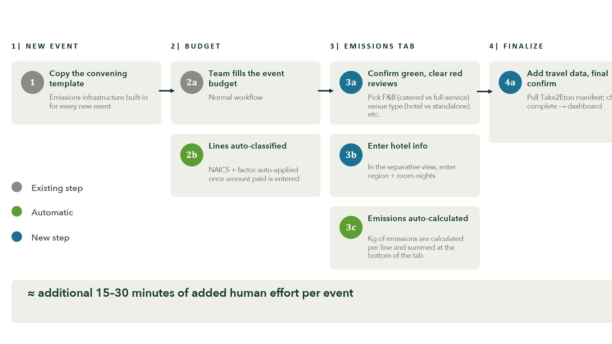
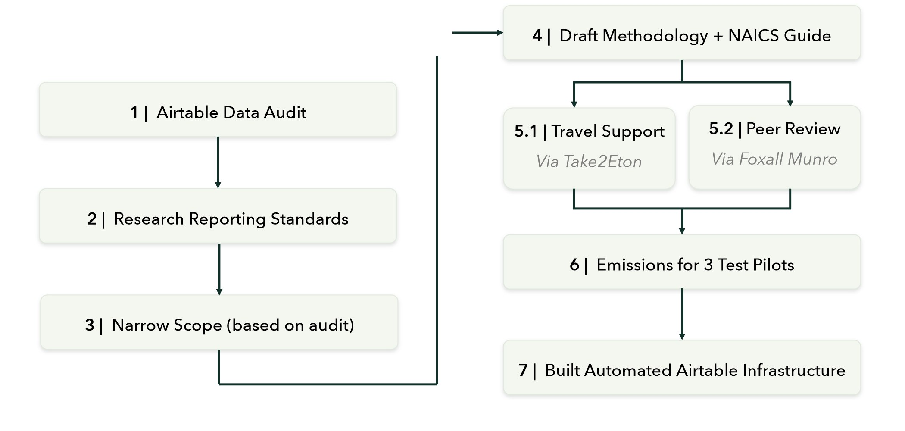
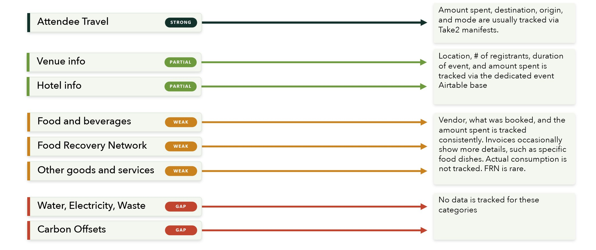
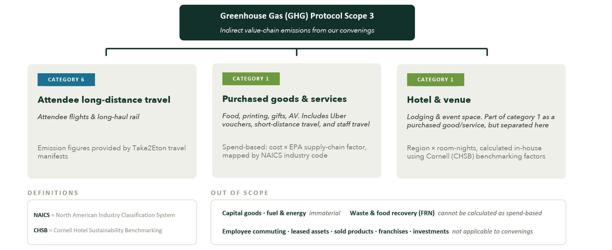
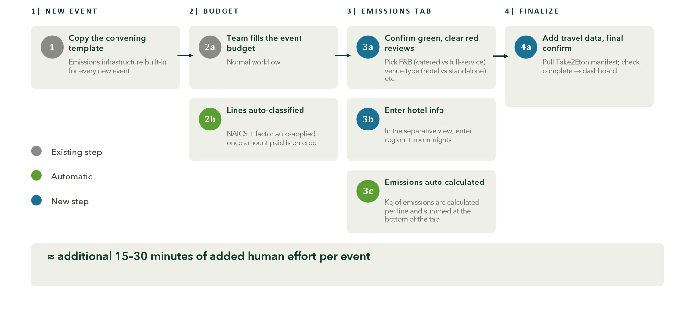
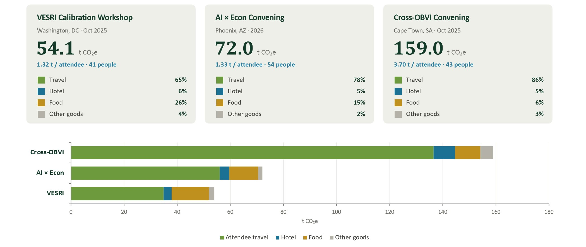

Building Climate Awareness into Event Planning
This tool aims to help build a credible, repeatable way to measure and report the carbon footprint of Community Team Schmidt Science convenings. By standing up the AirTable + Automations foundation, emissions tracking becomes a routine, low-effort part of post-event work.
The long-term initiative: make carbon emissions a routine factor of consideration in all phases of event planning, so the Community Team can report real, credible emission reductions over the long term, using this tool as a foundation.
Short-Term Goal & Layered Wins
- Leadership reporting + transparency
- Realistic target goals for carbon emissions
- Inform and track relevant short/long term reduction strategies
- Support value-chain insetting & offsetting
- Quantify footprints to support Global Net Zero
- Eventually inform planning decisions (emissions-aware choices, when it’s viable)
Project Roadmap

What Data is Already Tracked?

Methodology & Boundaries
Emissions are accounted for under the Greenhouse Gas (GHG) Protocol — Corporate Value Chain (Scope 3) Standard. Scope 3 covers indirect, value-chain emissions, which is basically everything not from fuel we burn directly or electricity we buy. For a typical SSci convening, this is the overwhelming majority of the footprint.

Emissions Tracking Workflow
Complete your standard budget entries, and the system automatically generates and categorizes the carbon line items in the Carbon Emissions tab. After you input the lodging and travel figures alongside a few minor decisions, the final footprint computes automatically.

Pilot Calculations

Partners
Take2Eton: Travel Management & Event Solutions
The team’s travel vendor. Take2Eton supplies per-event attendee travel (flight and rail) emissions, calculated on the DEFRA/DESNZ basis with radiative forcing and broken out by event, travel class, and haul. This is delivered as part of each event’s final spend report, so the largest and hardest-to-estimate category (attendee travel) comes to us accurately, at the source, rather than being estimated in-house.
Foxall Munro: Sustainability Consultancy
Provides methodology peer review and reduction / target-setting strategy. Founded by Damian Foxall and Amy Munro; creators of the open-access Sustainability Toolbox; known for their work with 11th Hour Racing and Ocean Hour Farm.